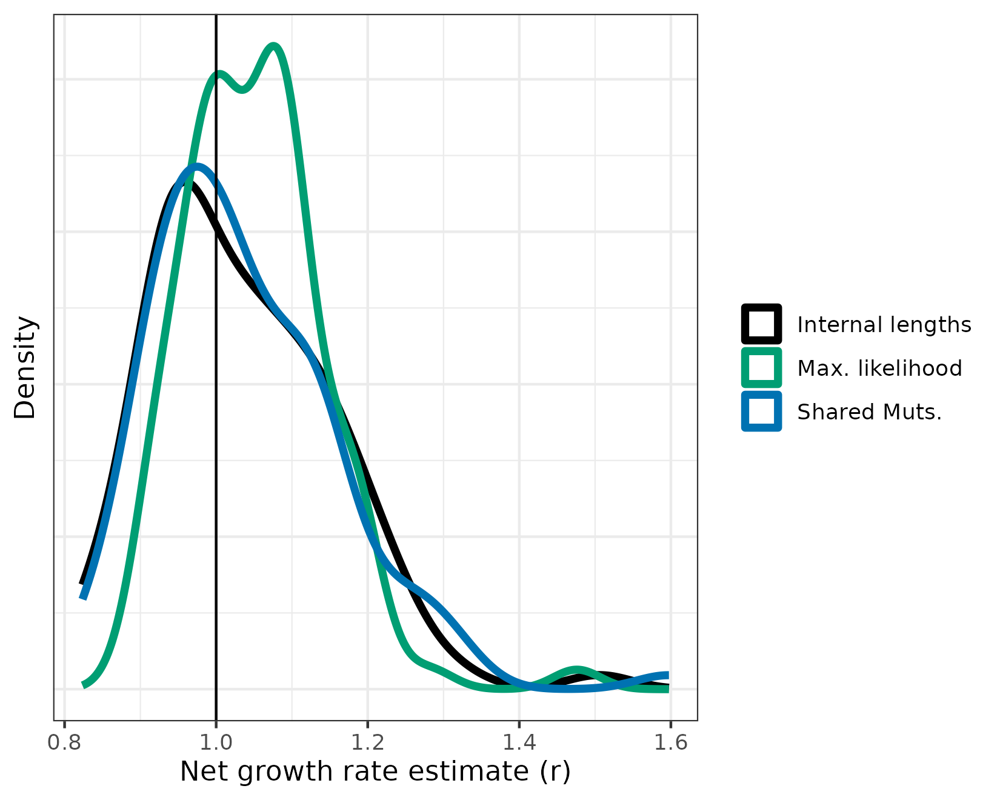
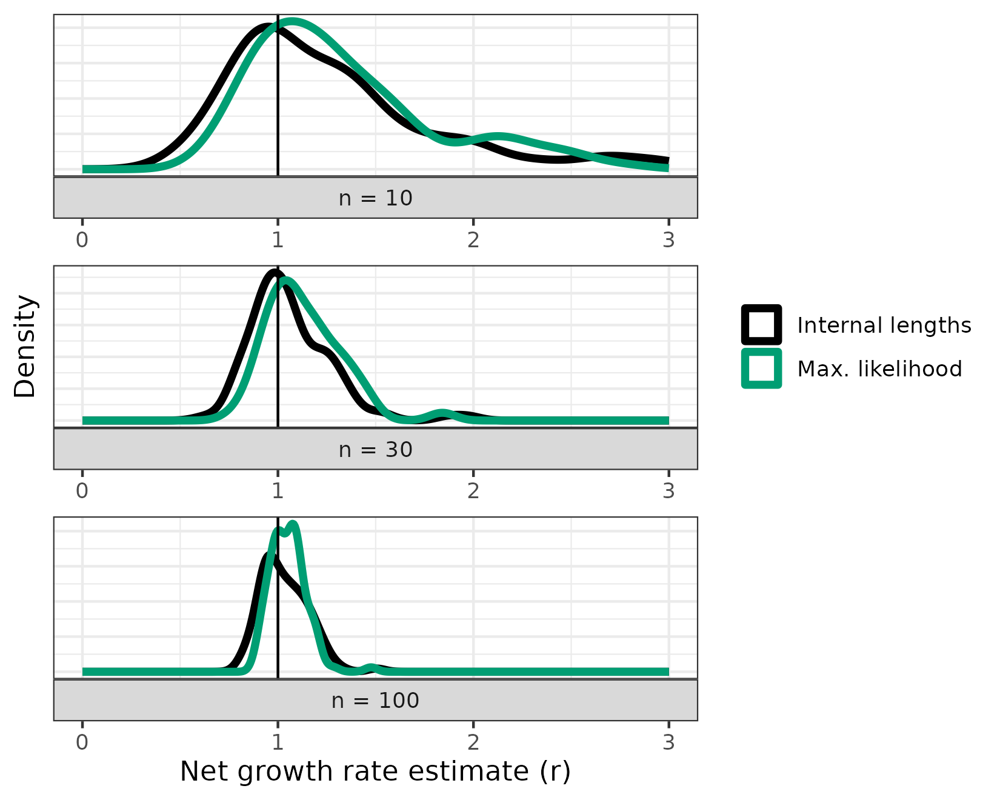

Validating growth rate estimates via simulation
Source:vignettes/cloneRate-simulate.Rmd
cloneRate-simulate.RmdIn this vignette, we’ll walk through how we simulated a birth-death branching process to validate our growth rate methods. The simulation procedure is a direct implementation of results by Amaury Lambert in a recent paper. We’ll show here that these results allow for extremely fast generation of a sampled tree of size \(n\) from a birth-death process of time \(T\) with fixed birth and death rates. The key point here is that we don’t have to simulate this using computationally intensive algorithms (gillespie etc.); the math provides a shortcut which allows us to generate the results on a single core in under a second for a tree with 100 tips or about 8 seconds for a tree with 1000 tips! In R!
The applications of this fast generation of sampled trees are countless. For us, these results allowed us to simulate thousands of trees to check our methods for growth rate estimation from phylogenetic tree reconstruction, which is detailed in our recent preprint. We’ll reproduce this validation here.
Setup
First, we’ll have to load the packages we want to use. We’ll be
plotting the trees using the ape package function
ape::plot.phylo()
along with some other ape functions. If you have
cloneRate installed, you already have the ape package. We’ll
also be using ggplot2 to make
our plots, which can be installed from CRAN as shown below:
# Load and attach our package cloneRate
library(cloneRate)
# Load and attach ape, which will be installed if you've installed cloneRate
library(ape)
# Install ggplot2 if necessary, then load and attach it with library()
if (!requireNamespace("ggplot2")) {
install.packages("ggplot2")
}
library(ggplot2)We’ll also set the color palette which we’ll use for most of the plotting. The palette is taken from here
colorPal <- c("#000000", "#E69F00", "#56B4E9", "#009E73", "#F0E442", "#0072B2", "#D55E00", "#CC79A7")Simulating trees
In this section, we’ll simulate ultrametric and mutation-based trees. Ultrametric just means that the tips are all the same distance from the root. In our specific case, the ultrametric trees will have edge lengths in units of time, so ultrametric means that the tips are sampled at the same time. Mutation-based trees are those with edge lengths in units of mutations. Mutation-based trees will typically not be ultrametric, because there will be some fluctuations in the number of mutations acquired.
We’ll be generating trees of class phylo, which is a
fairly straightforward encoding of phylogenetic trees in R. The ape
documentation describing the class phylo can be found here.
Ultrametric trees
Let’s start with ultrametric trees. First, let’s simulate a single
tree and have a look at the class phylo. We’ll use the
function simUltra() from our package to do this, which
simulates an ultrametric tree. We’ll set a birth rate a, a
death rate b, an age for the tree cloneAge,
and the number of sampled tips n. Note that we use
cloneAge instead of \(T\)
for the time because T in R means TRUE.
# Generate the tree
tree <- simUltra(a = 1, b = 0, cloneAge = 20, n = 100)
# We see that the tree is of class phylo
class(tree)
#> [1] "phylo"
# Preview the tree
print(tree)
#>
#> Phylogenetic tree with 100 tips and 99 internal nodes.
#>
#> Tip labels:
#> t14, t62, t21, t38, t89, t88, ...
#>
#> Rooted; includes branch lengths.Again, the best place to get more info about the class
phylo is here.
Our functions for simulating trees will include metadata. Let’s take a
look at the metadata included in the tree.
print(tree$metadata)
#> r a b cloneAge n runtime_seconds addStem
#> 1 1 1 0 20 100 0.912 FALSEWe see that the columns are:
-
r,a,b: The growth rate params.ris the net growth rate,ais birth rate andbis death rate, sor=a-b -
cloneAge: The time that passes, in the same units asr,a, andb. -
n: The number of samples from the birth-death process, producing a tree withntips. -
runtime_seconds: The elapsed time to generate the tree. -
addStem: Tells us whether the tree has a root edge preceding the first split. We’ll show the “stem” in plots below.
Now let’s plot the tree.
plot.phylo(tree, direction = "downwards", show.tip.label = FALSE)
axisPhylo(side = 2, backward = FALSE, las = 1)
title(main = "Simulated tree", ylab = "Time")
In the tree we plotted above, we see that the “stem” is the edge extending from time 0 to the first split. We call these splits coalescence events and they’ll be very important for our methods of growth rate estimation.
Also, we see that the tree is ultrametric, meaning that they all are sampled at the same time, in this case 20 units of time after the birth-death process began. As a default, we’ll talk about units of time in years, but that is arbitrary. Just make sure the units of the growth rate (per year) are the same as the time units (years).
Let’s apply our growth rate estimates to this tree, seeing if our
estimates are close to the value of r that we used to
generate the tree. We have two functions for estimating the growth rate
of an ultrametric tree, and we’ll compare their performance later
on:
-
internalLengths(): This function sums the edge lengths of the internal edges of the tree (excluding the stem). We call this sum \(L_i\). The growth rate is calculated as \(r = L_i / n\) where \(n\) is the number of sampled tips. -
maxLikelihood(): This function uses a maximum likelihood estimation of the distribution of coalescence times, using the information about when the tree splits. The distribution of coalescence times is approximated by a standard logistic distribution scaled by \(1/r\). Maximizing the likelihood of the observed coalescence times for the \(r\) term gives us our estimate.
Both methods are detailed in our recent preprint.
maxLikelihood(tree)$estimate
#> [1] 1.123968
internalLengths(tree)$estimate
#> [1] 1.043864We know that our actual growth rate is 1, so we can evaluate how our
estimates are doing. One estimate doesn’t really tell us much though.
Let’s try 100. To do this, we just set the nTrees param
equal to 100 in our simUltra() function. You can
parallelize this process if you have the parallel package
installed by simply setting nCores, but we’ll leave this at
1 for now. By printing the elapsed time, we see that with only one core
it takes about a minute.
ptm <- proc.time()
tree.list <- simUltra(a = 1, b = 0, cloneAge = 20, n = 100, nTrees = 100, nCores = 1, addStem = TRUE)
print(proc.time()[["elapsed"]] - ptm[["elapsed"]])
#> [1] 84.295Let’s apply our methods to these trees. We can input either a single
phylo object, or a list of phylo objects to
our growth rate functions. Either way, it’ll return a
data.frame which each row corresponding to an estimate for
each tree.
resultsMaxLike <- maxLikelihood(tree.list)
resultsLengths <- internalLengths(tree.list)We gave each method 100 trees to estimate, let’s plot these estimates. Remember that all the input trees had a growth rate of 1, so we want these estimates to be close to 1. We’ll use ggplot’s density plot for this:
# Combine for ggplot formatting
resultsCombined <- rbind(resultsLengths, resultsMaxLike)
# Plot, adding a vertical line at r=1 because that's the true growth rate
ggplot(resultsCombined) +
geom_density(aes(x = estimate, color = method), linewidth = 1.5) +
geom_vline(xintercept = exampleUltraTrees[[1]]$metadata$r) +
theme_bw() +
theme(
axis.text.y = element_blank(), axis.ticks.y = element_blank(),
legend.title = element_blank()
) +
xlab("Net growth rate estimate (r)") +
ylab("Density") +
scale_color_manual(labels = c("Internal lengths", "Max. likelihood"), values = c("black", "#009E73"))
Not bad, but we’ll want to test this more formally over a large range of parameter values. More on that later in this vignette. For now, let’s shift our attention to mutation trees.
Mutation trees
There are two ways to generate mutation trees:
- We can add mutations to a time-based ultrametric tree
- We can generate a completely new mutation-based tree
Either way, the process of generating mutation trees consists of:
- Generating an ultrametric, time-based tree. This step is only required to generate a new tree
- For each edge, draw the number of mutations from a poisson
distribution with mean equal to the mutation rate
numultiplied by the edge length of the time-based tree.
Let’s take the ultrametric trees we just generated and convert them
to mutation-based trees. For this, we provide the function
ultra2mut():
# Set mutation rate equal to 10 muts/year for all trees
mutTree.list <- ultra2mut(tree.list, nu = 10)Alternatively, we can generate a new set of mutation trees using the
function simMut(). We won’t run this because it will take
another few minutes, and we already have the mutation-based trees
generated above.
# Set params for ultra tree + a mutation rate
mutTree.list2 <- simMut(a = 1, b = 0, cloneAge = 20, n = 100, nTrees = 100, nu = 100, nCores = 1)If we want to estimate the growth rate from a mutation tree, we use
the sharedMuts() function, which works very similarly to
the internalLengths() function. However, instead of
counting the internal edge lengths in units of time, the
sharedMuts() function counts the internal/shared mutations
and uses the mutation rate to scale to time. So, if \(M_i\) is the number of internal or shared
mutations, \(nu\) is the mutation rate,
and \(n\) is the number of samples, the
growth rate estimate is \(r = M_i /(\nu
n)\).
Let’s apply the sharedMuts() function to the trees that
we converted to mutation-based. Remember that these mutation-based trees
are generated from the ultrametric trees we applied our functions
maxLikelihood() and internalLengths() to.
resultsShared <- sharedMuts(mutTree.list, nu = 10)Let’s plot the estimates all together. First, we’ll combine the
data.frames produced. The sharedMuts() function outputs an
additional column corresponding to the mutation rate nu.
Because of this, using rbind on the full data.frames will give an error.
We only want to look at the estimates for now, so we’ll just combine the
necessary columns from each data.frame.
# Combine the columns with the estimates
colsUse <- c("lowerBound", "estimate", "upperBound", "method")
resultsAll <- rbind(resultsShared[, colsUse], resultsCombined[, colsUse])
# Plot, adding a vertical line at r=1 because that's the true growth rate
ggplot(resultsAll) +
geom_density(aes(x = estimate, color = method), linewidth = 1.5) +
geom_vline(xintercept = exampleUltraTrees[[1]]$metadata$r) +
theme_bw() +
theme(
axis.text.y = element_blank(), axis.ticks.y = element_blank(),
legend.title = element_blank()
) +
xlab("Net growth rate estimate (r)") +
ylab("Density") +
scale_color_manual(labels = c("Internal lengths", "Max. likelihood", "Shared Muts."), values = c(colorPal[1], colorPal[4], colorPal[6]))
It looks like we’re on the right track. From this, it’s hard to tell which is best. Maximum likelihood seems a bit biased on the high side, but the estimates seem to fall in a more narrow range. Let’s do a more quantitative analysis now that we have the hang of it.
Quantitative comparisons
In this section, we’ll use our ability to generate trees in order to test our methods. We’ll focus mainly on the ultrametric trees, noting that the mutation-based approach based on shared mutations is analogous to the internal lengths method. We’ll see how well our methods perform, where they perform well, and where they fail.
Max likelihood vs. internal lengths vs. shared mutations
We want to know which estimate is the best. We’ll start by making a quantiative comparison of the 100 estimates we already have from our simulations in the previous section. 100 trees should be enough to get an idea of which estimate is most accurate, but we can always simulate more. We won’t do that here though because it’ll take a bit longer and, well, we have to stop somewhere.
Standard deviation
# Calculate the standard deviation of our estimates
simSD <- unlist(lapply(
split(resultsAll, resultsAll$method),
function(x) {
sd(x$estimate)
}
))
print(simSD)
#> lengths maxLike sharedMuts
#> 0.1104588 0.0813790 0.1196036What we saw in the density plot is quantified in the mean, sd, and
rmse. Maximum likelihood usually performs best by Root Mean Square Error
(RMSE) even though it’s mean is a bit higher (usually around 1.04). With
only 100 trees, there will be larger fluctuations, so maximum likelihood
might have a higher RMSE than the other methods. The shared mutations
method typically performs a bit worse than its ultrametric cousin,
internalLengths(). The randomness of the poissonian
mutation accumulation likely leads to a wider spread of estimates in
sharedMuts(), which explains the difference between the two
methods.
Coverage probability
Up to now, we’ve only looked at the estimate itself. We note that our
methods also provide confidence intervals. The default, with
alpha = 0.05, is to provide 95% confidence intervals. While
you can change that if you’d like, 95% seems to be pretty standard, so
we’ll use that. If our 95% confidence interval is accurate, we’d expect
our estimates to fall within this interval 95% of the time. Let’s
check:
# Calculate the coverage probability of our estimates
groundTruth <- 1
simCoverage <- unlist(lapply(
split(resultsAll, resultsAll$method),
function(x) {
# Set insideInterval to TRUE if inside interval and FALSE if outside
insideInterval <- (x$lowerBound < groundTruth & x$upperBound > groundTruth)
# Count TRUE as 1 and FALSE as 0. See the fraction inside interval
sum(insideInterval) / length(insideInterval)
}
))
print(simCoverage)
#> lengths maxLike sharedMuts
#> 0.94 0.96 0.96We’re right around 95%, which is great! But you might expect that
maxLikelihood(), which typically has the lowest RMSE, might
have the best coverage probability. In fact, the confidence interval for
the maxLikelihood() function is narrower. The opposite is
true for sharedMuts() which has the widest confidence
interval to account for the randomness of mutation accumulation. With
only 100 trees, the coverage probability will only be a rough
estimate.
Varying parameters
So far, we’ve looked at the same parameters. Now, we’ll see what happens when we change some important parameters about the birth-death process.
Varying n
One of the most interesting results to explore further is how the
accuracy of the estimates depends on the number of samples. For this,
we’ll look at a few different n parameter values. To keep
things from running for too long, we can re-use our trees from
n=100 and add 100 more trees at different n
values. For this, let’s show how to run simUltra() with a
vector input for n. First, we’ll generate the vector, which
we’ll call n_vec. Let’s explore a small n
value, 10, and an intermediate n value, 30.
For now, we’ll keep the growth rate a - b equal to 1,
but again we’ll let the actual birth and death rates vary.
a_vec <- stats::runif(n = 200, min = 1, max = 4)
b_vec <- a_vec - 1In total, our n_vec is of length 200. So we’ll want to
make sure a_vec and b_vec are also of length
200. And we’ll have to set nTrees = 200. If we generate
multiple trees, we either set a single value for the parameters, or a
vector of length nTrees. This applies to both
simUltra() and simMut(). Let’s generate some
more trees. Note: this will also take a few minutes.
Now, let’s apply our estimates and combine the data.frames:
# Apply our estimates for ultrametric trees
n10_n30_maxLike <- maxLikelihood(n10_n30_trees)
n10_n30_lengths <- internalLengths(n10_n30_trees)
# Combine the estimates
n10_n30_both <- rbind(n10_n30_maxLike, n10_n30_lengths)Finally, we can add our resultsCombined data.frame from
before, which has the results of applying maxLikelihood()
and internalLengths() to the set of 100 ultrametric trees
at n = 100.
# Merge the results data.frames
results_vary_n <- rbind(n10_n30_both, resultsCombined)Let’s make a plot for each of these, showing the performance. We’ll
use ggplot2::facet_wrap() in order to show the same plot at
various n values. Although we have a different number of
trees from the n = 100 case, the density plot will
normalize this.
ggplot(results_vary_n) +
geom_density(aes(x = estimate, color = method), linewidth = 1.5) +
geom_vline(xintercept = exampleUltraTrees[[1]]$metadata$r) +
theme_bw() +
theme(
axis.text.y = element_blank(), axis.ticks.y = element_blank(),
legend.title = element_blank()
) +
xlim(0, 3) +
xlab("Net growth rate estimate (r)") +
ylab("Density") +
scale_color_manual(
labels = c("Internal lengths", "Max. likelihood"),
values = c("black", "#009E73")
) +
facet_wrap(~ factor(paste0("n = ", n), levels = c("n = 10", "n = 30", "n = 100")),
ncol = 1, strip.position = "bottom", scales = "free", dir = "v"
)
As you can see, both estimates are highly dependent on the number of
samples. If you’d like to see the same density values on the y-axis for
all three n values, set scales = "fixed" in
the facet_wrap() function.
If you’re interested, you can apply the same quantitative measures to this data as we did before in Quantitative comparisons. We won’t repeat that here, but we show this in Figure 2 of our preprint. This information is also available in the Supplementary tables, which are also available as .csv files.
Varying r (and/or cloneAge)
As we noted before, we can simulate many trees at once using
simUltra() and simMut(). Here, we’ll use
simUltra() to generate 100 trees at various growth rates.
We do a similar analysis in Figures 3 and 4 of our
preprint, noting that our methods struggle with small growth rates.
Let’s see if we come to the same conclusion here.
Varying r or cloneAge?
First, we have to address something that might otherwise lead to
confusion; varying r is the same as varying
cloneAge. When you think about it, it makes sense. If I
simulate a population with a net growth rate of 1 per year for 20 years
it should look the same as a growth rate of 0.5 per year for 40 years.
We’ll show this, but first consider the fact that the units are
meaningless, so long as they’re consistent. So a growth rate of 1/12 and
a clone age of 20*12 is exactly the same as a growth rate of 1 and 20 if
the units change from a years to months.
This all might be a bit confusing, so let’s plot it. First, we’ll simulate a tree with a growth rate of 2 for 30 years and compare it to a tree with a growth rate of 0.5 and the same 30 years. These trees should look different. Finally, we’ll add a tree that has a growth rate of 0.5, but run it for 120 years. If what I said above is true, we should see that the last tree looks like the first tree, because 0.5 for 120 should be the same as 2 for 30. Let’s find out:
# First tree, r = a - b = 2
tree1 <- simUltra(a = 2.5, b = .5, cloneAge = 30, n = 50)
# Second tree, with r = a - b = 0.5
tree2 <- simUltra(a = 1, b = .5, cloneAge = 30, n = 50)
# Third tree, with r = 0.5 but cloneAge = 120
tree3 <- simUltra(a = 1, b = .5, cloneAge = 120, n = 50)Now, let’s plot using par() to show all three in one
plot
par(mfrow = c(1, 3))
ape::plot.phylo(tree1, direction = "downwards", show.tip.label = F, main = "r = 2, cloneAge = 30")
ape::plot.phylo(tree2, direction = "downwards", show.tip.label = F, main = "r = 0.5, cloneAge = 30")
ape::plot.phylo(tree3, direction = "downwards", show.tip.label = F, main = "r = 0.5, cloneAge = 120")While the trees on the left and the right aren’t identical due to the stochastic nature of the birth-death process, they are similar, and certainly different from the tree in the middle.
Performance across r values
Now we can arbitrarily choose whether to vary r or
cloneAge. For consistency, we’ll vary r, as we
do in Figures 3 and 4 of our
preprint. Here, we have two options:
- Simulate at fixed
rvalues, showing which are good and which are problematic - Simulate at random
rvalues and then try to decipher which estimates are good and which aren’t
Option 1 is essentially the same as we did in Varying n, but with r instead of
n, so repeating that here wouldn’t be as useful. Option 2
is also more realistic…we can pretend we don’t know the ground truth and
show how we decide if our methods are relevant before comparing to the
ground truth.
Let’s simulate 1000 trees with 50 samples n and various
growth rates r, ranging from 0.1 to 1 per year, run for 40
years. This will take a while, so we won’t actually evaluate this as
part of this vignette. However, we do a full reproduction of our work
from our
recent preprint in an
article, “Reproduce simulation results” which can be found on our package website.
# Uniform ditribution of r used to generate b_vec
r_vec <- stats::runif(n = 1000, min = 0.1, max = 1)
a_vec <- stats::runif(n = 1000, min = 1, max = 3)
b_vec <- a_vec - r_vec
# Input to simUltra()
vary_r_trees <- simUltra(a = a_vec, b = b_vec, cloneAge = 40, n = 50, nTrees = length(a_vec))If we were to run the code above, we could analyze it the same as we
have done, with our internalLengths() and
maxLikelihood() functions. However, we’d also have to apply
our diagnostic, which tells us which clones are good candidates for our
method, and which are not. If we run a clone that’s not a good
candidate, we’ll get a warning. Let’s generate a tree with a very low
growth rate and plot it.
# Let's call it slowClone
slowClone <- simUltra(a = .15, b = .05, n = 50, cloneAge = 40)
# Plot the tree
ape::plot.phylo(slowClone, direction = "downwards", show.tip.label = F)
We see that this tree has long internal branches and short external branches. This indicates that the process has not been “supercritical” enough (i.e. the growth rate and time are too low). Quantitatively, this means the ratio of external to internal edge lengths is low. Let’s try to apply our methods:
# Apply our estimates
maxLikelihood(slowClone)
#> Warning in maxLikelihood(slowClone): External to internal lengths ratio is less than or equal to 3,
#> which means max. likelihood method may not be applicable. Consider
#> using birthDeathMCMC() function, which avoids this issue.
#> lowerBound estimate upperBound cloneAgeEstimate sumInternalLengths
#> 1 0.1386292 0.1804583 0.2222874 43.49246 302.0618
#> sumExternalLengths extIntRatio n alpha runtime_s method
#> 1 286.5561 0.9486671 50 0.05 0.007 maxLike
internalLengths(slowClone)
#> Warning in internalLengths(slowClone): External to internal lengths ratio is less than or equal to 3,
#> which means internal lengths method may not be applicable. Consider
#> using birthDeathMCMC() function, which avoids this issue.
#> lowerBound estimate upperBound cloneAgeEstimate sumInternalLengths
#> 1 0.1196476 0.165529 0.2114105 43.99225 302.0618
#> sumExternalLengths extIntRatio n alpha runtime_s method
#> 1 286.5561 0.9486671 50 0.05 0.003 lengthsOur estimates are off by quite a bit (the ground truth estimate is 0.1), and we see a warning. The warning tells us that the external to internal edge length ratio is below 3, so this clone is likely not a good candidate for our methods. For details on how we came up with 3 as a cutoff see Figure 4 of our preprint or the reproduced analysis in the article, “Reproduce simulation results” from our package website. The real advantage to this diagnostic is that we can look at a tree and calculate this ratio to tell us right away if our methods are applicable. Again, if you’re interested in the quantitative side of this, you can apply the metrics from the Quantitative comparisons section, which we do in the longer form analysis in the article mentioned above.
References
The method for simulating the trees is a direct result of the work of Amaury Lambert in the following paper. The mathematical methods for estimating growth rates build in large part from the same work, linked below:
And here’s a final link to our preprint for more of the details of the methods and data analysis.
There aren’t too many colors in this vignette, but we tried to use colorblind friendly colors, specifically pulling colors from a palette designed by Bang Wong and available here.